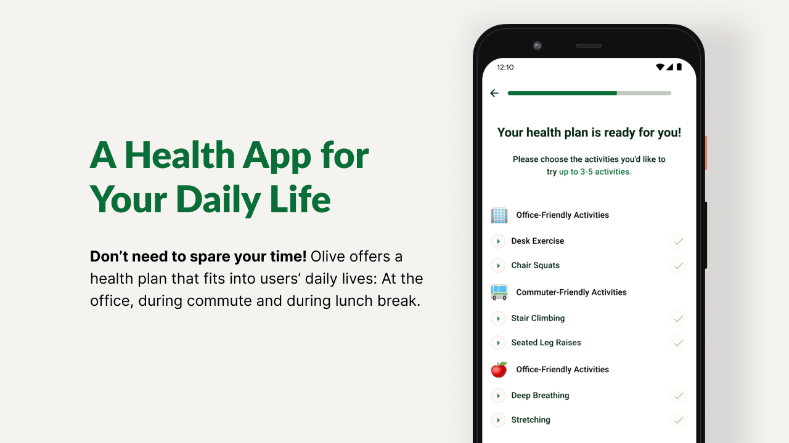
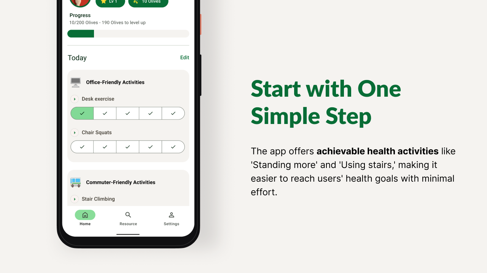
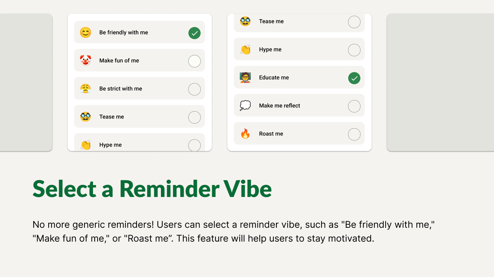
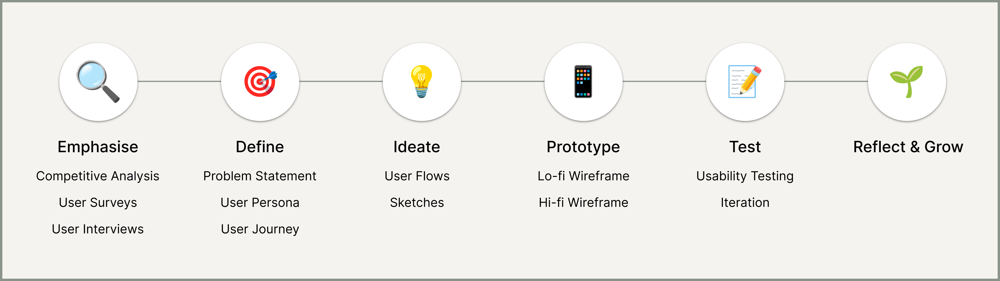
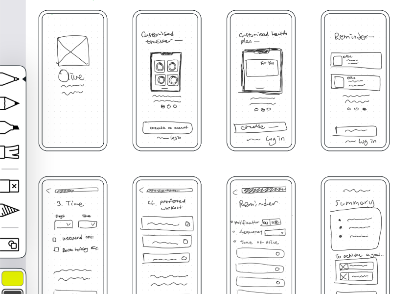
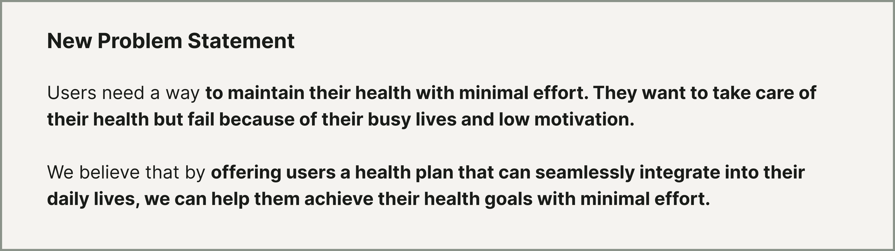

Problem
- 1. How might we help users incorporate regular exercise habits into their busy daily lives?
- 2. How might we help users stay motivated in their health routine?
Solution
  Design Process
After understanding users' needs through user research, I created a user persona and a user journey. After creating a lo-fi prototype, I ran user testing with 6 potential users. While the prototype functioned as intended, it did not provide a solution aligned with what the users truly needed. This prompted me to reassess users' challenges and explore a new solution.
User Research
I analysed 3 health related apps to learn about the current market and conducted a user survey and interviews to validate my hypothesis and understand users' insights. To organise users' insights, I have created an affinity map and categorised them into 3 main points

Insight: Users don’t want to spare time for workouts as they are busy and there are more fun things to do in their lives.
✨ Key Takeaways
There's a market gap for health apps that seamlessly fit into users' daily routines with achievable activities. Also, there are not many developed office workout apps.
Users don't like to workout regularly. They prefer quick lunchtime walks and spending time with friends and family.
They want an easy-to-use and useful health app. It shouldn't ask users to spare much time.
According to the user survey, the most desired feature is a recommended health activity and guide (67%). Tracking and recording health are the second most desired features. Users are looking for features like progress tracking and reminders to help them stay motivated.
User Persona & Journey
From the user research, I integrated feedback into user personas. For example, one of our personas, Mandy is frustrated about her health management. She has attempted to create plans for going to the gym and eating healthily, but she finds it challenging to take action or exercise regularly.

I also created a user journey to gain a deeper understanding of the challenges and expectations that users may encounter throughout their experience.

Sketches
I sketched my ideas. Then I moved to mockups, and finally to the high-fidelity prototype. During the sketch phase, I used Crazy8 to explore diverse design ideas.
Wireframes & Prototypes
I then brought my idea to an interactive digital low-fidelity prototype and realised the need for usability testing to iterate features.

Usability Test
I conducted user testing with six potential users. While engaging with potential users, I found that I need to reassess users' challenges and explore a new solution.

Insights: Users don't want to manage all aspects of their health. Recording all their unique health details is not what they need. They are looking for something that can help them stay motivated and improve their health with minimal effort.
I revisited users' feedback and created a new problem statement.
Major Design Iterations
Iteration 1. Increased User Experience by aligining the app's concept with users' real needs
I modified the concept of the app to align with users' goals and behaviour. The revised concept transforms the app into a platform that enables people who are too busy to work out to effortlessly take care of their health in their daily lives.
Iteration 2. Enhanced usability by simplifing the recording process
During usability testing, all six participants found it challenging to navigate to the next page when there were multiple features displayed on the screen. Therefore, to improve usability, I simplified the recording process, enabling users to effortlessly log their workout data with a single button click instead of recording manually through the adding button.
Iteration 3. Incorporated a level-based feature to enhance user engagement in the app's user experience
The original concept allowed users to create their own affirmations to remember their goals, but they struggled to measure their progress. To address this, I replaced the concept of goals with level-based features. This enables users to easily track their health improvement and feel a sense of achievement as they level up.
Final design

What I Learnt üå±
Understand the design process: In my first UX/UI design project, I had the opportunity to learn a lot. Olive helped me understand the design process, enhanced my communication skills through user interviews and usability testing, and become familiar with Figma.
Importance of user testing: As mentioned earlier, I found it necessary to make significant design changes following usability testing. Initially, this was quite surprising and even unsettling. However, I came to realise that this is a fundamental part of the user-centred design process. Ultimately, this process led to the creation of an app that better addresses users' real needs. It taught me the importance of iterating and refining designs based on users' feedback.
Next Steps ⏭️
Another usability test: I am excited about conducting another usability test to validate whether my new design meets users' needs and is achievable. This presents another opportunity to enhance my usability testing skills. In the past, I learnt on the job and took longer than I expected. This time, I aim to be more prepared and thorough in my approach.
Desktop version: I want to further develop a desktop version of Olive so users in the office can use the app efficiently.